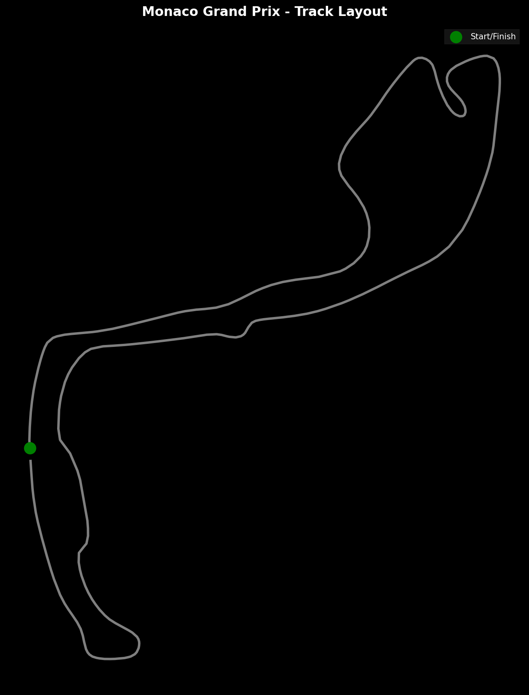
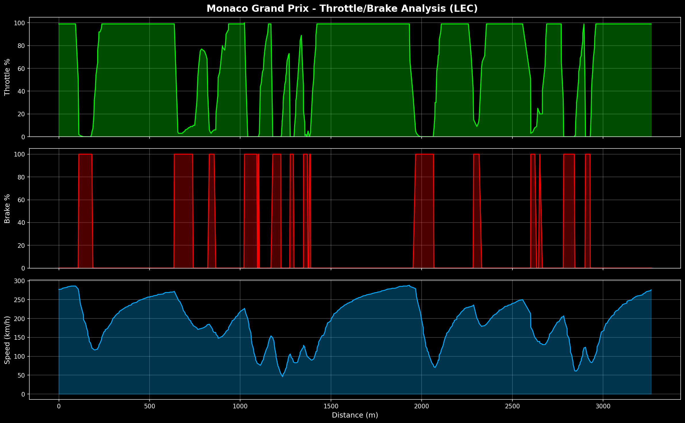

01
TELEMETRY ANALYSIS
Real-time car data analysis including speed traces, throttle/brake application, and driver comparison

Track Position Mapping
GPS-based track visualization with speed-colored trajectory showing where drivers gain and lose time

Speed Trace Analysis
Lap-by-lap speed comparison revealing braking points and acceleration zones

Throttle & Brake Usage
Driver input analysis showing pedal application patterns and driving style

Driver Comparison
Head-to-head analysis of driver performance across all telemetry channels